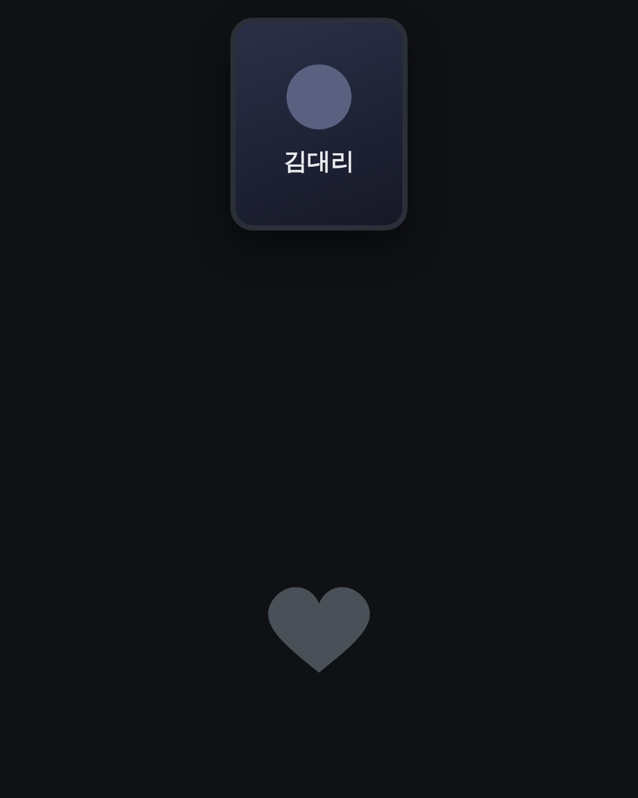
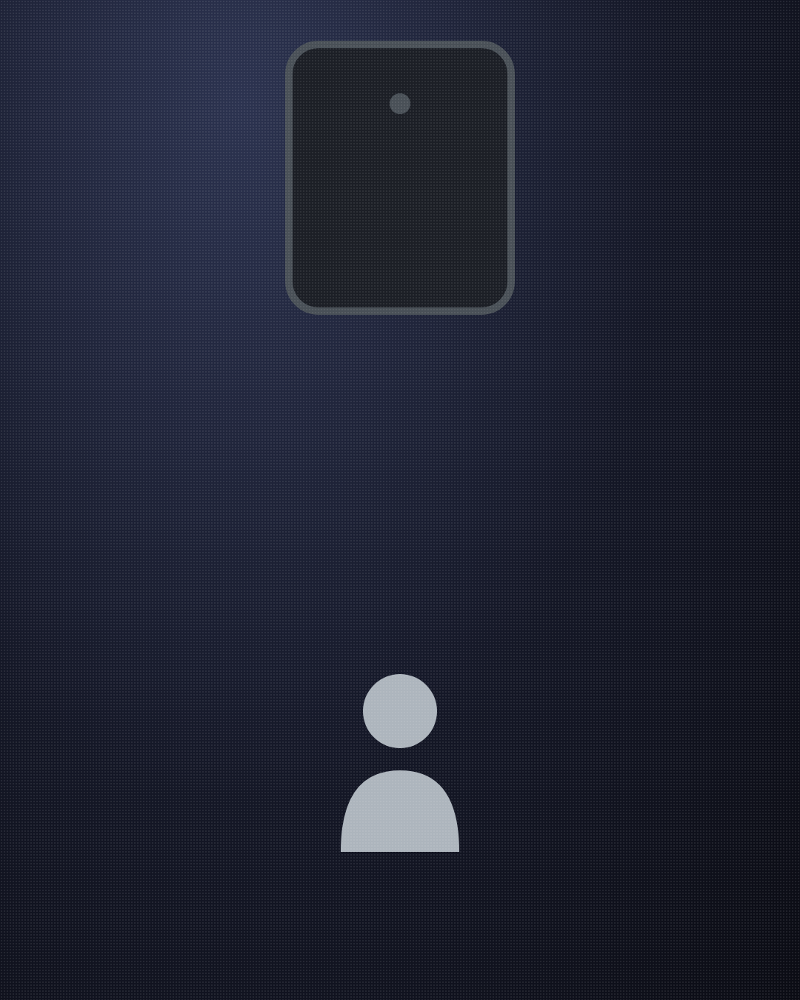
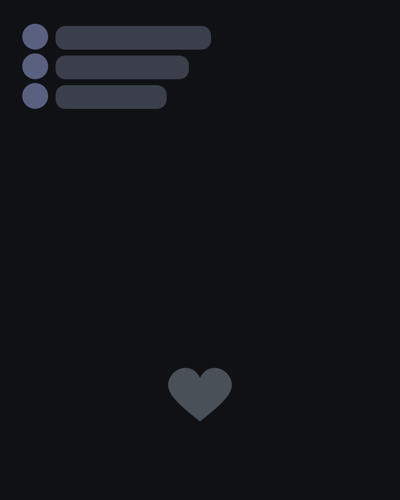
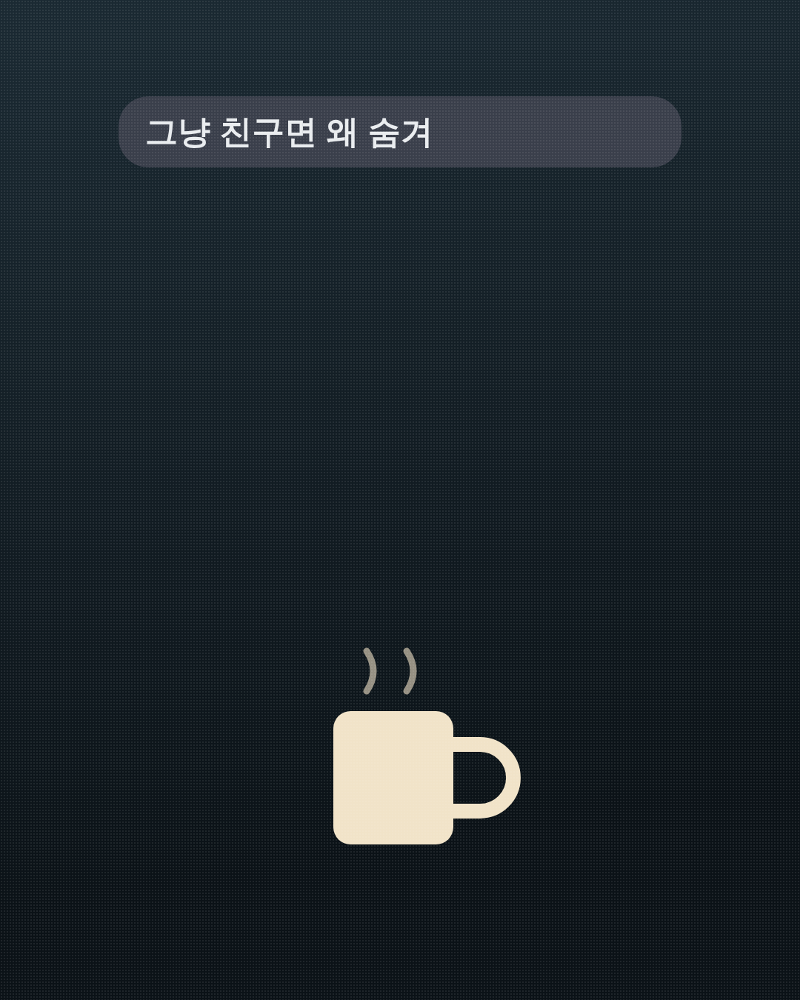
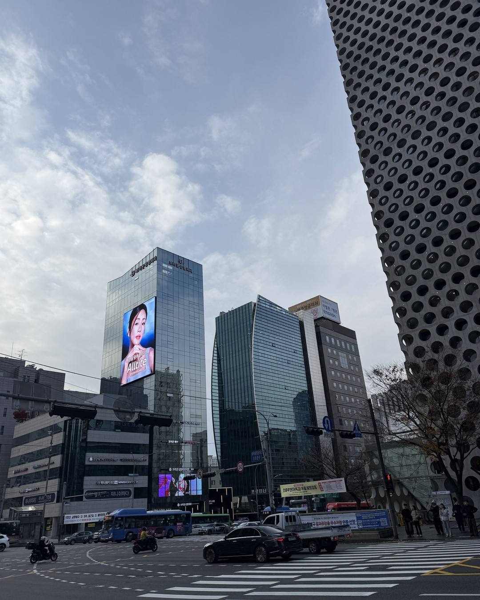
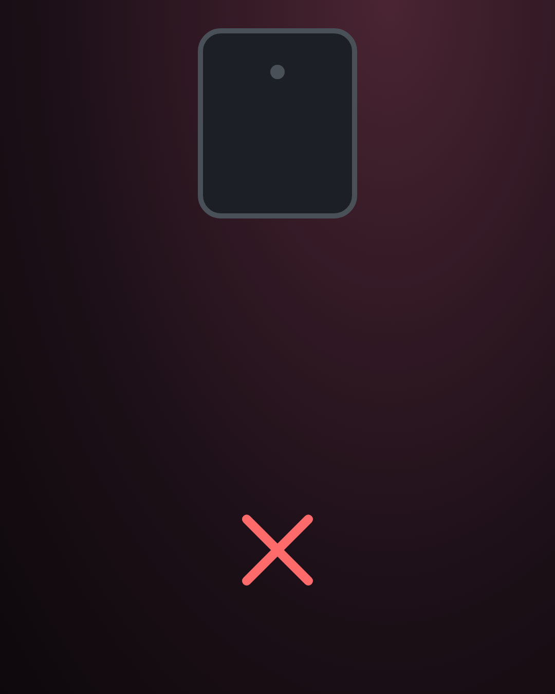
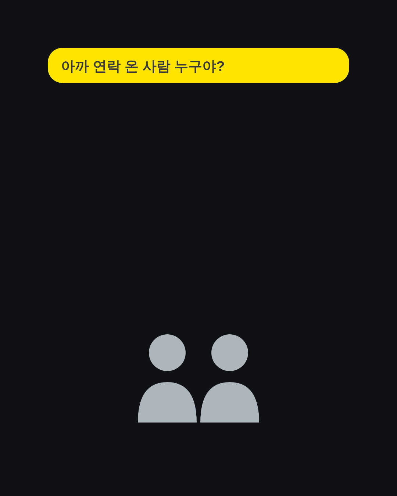
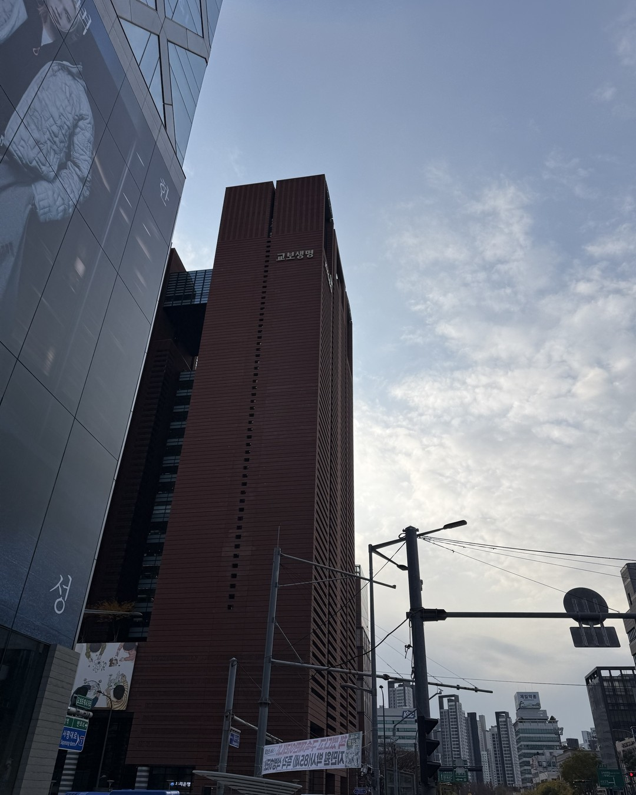

남자친구 휴대폰에 뜬 그 여자 이름,
넘기면 안 되는 경우 3
(대부분은 아무 일 아니에요. 이것만 빼고.)
1/14
@mszexc
넘겨보세요 →

알림에 뜬 여자 이름 하나로
의심부터 하면, 내가 먼저 지쳐요.
(동료 · 친구 · 가족일 때가 훨씬 많아요.)
2/14
@mszexc
남자들끼리 하는 말 #63

그런데 남자들끼리는
이 세 가지면 "그건 좀 아니다" 해요.
3/14
@mszexc
남자들끼리 하는 말 #63

첫 번째.
그 이름만 뜨면 화면을 뒤집어요.
(다른 알림엔 아무렇지 않은데요.)
4/14
@mszexc
남자들끼리 하는 말 #63

두 번째.
저장 이름이 애매해요.
(「김대리」 「헬스장」처럼, 여자인 걸 모르게 해뒀다면.)
5/14
@mszexc
남자들끼리 하는 말 #63

세 번째.
물어보면 대답이 길어요.
(한마디면 끝날 대답에 설명이 붙어요.)
6/14
@mszexc
남자들끼리 하는 말 #63
이 셋이 겹치면
그 이름은 "그냥 아는 사람"이 아니에요.
(남자가 숨기는 건, 들키면 곤란한 것뿐이에요.)
7/14
@mszexc
남자들끼리 하는 말 #63

남자들끼리는 이렇게 말해요.
"그냥 친구면 굳이 숨길 이유가 없지."
(남자들도 다 아는 기준이에요.)
8/14
@mszexc
남자들끼리 하는 말 #63

반대로 괜찮은 경우.
묻기 전에 먼저 말해 주는 남자.
("회사 동기한테 연락 왔어." 숨길 게 없는 거예요.)
9/14
@mszexc
남자들끼리 하는 말 #63

하지 말 것 하나.
몰래 휴대폰 보기.
(그 순간 문제는 그 여자가 아니라, 당신이 돼요.)
10/14
@mszexc
남자들끼리 하는 말 #63

대신 이렇게 물어보세요.
"아까 연락 온 사람 누구야? 그냥 궁금해서."
(따지는 말투 말고, 궁금한 말투로.)
11/14
@mszexc
남자들끼리 하는 말 #63

그리고 대답보다
대답하는 얼굴을 보세요.
(편하게 말하면 괜찮아요. 굳으면, 이유가 있어요.)
12/14
@mszexc
남자들끼리 하는 말 #63

휴대폰보다 먼저 봐야 할 건
그 남자의 태도예요.
13/14
@mszexc
남자들끼리 하는 말 #63
이것만 기억하세요.
뜨는 이름이 아니라, 숨기는 이름이 문제예요.
남자가 하는 말의 뜻은 전자책 1·2권에 · 프로필 링크에서 무료로 받아보세요
14/14
@mszexc
남자들끼리 하는 말 #63